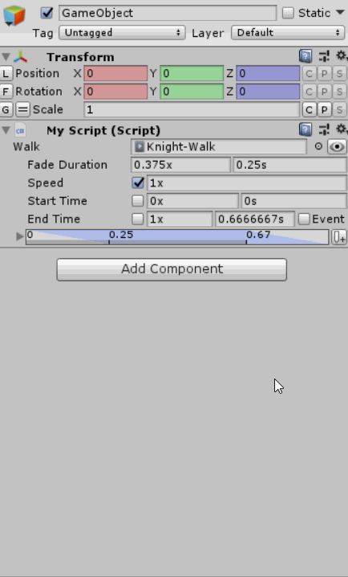

Planned Release 2020-01-??
- Animancer v4.0 is currently in development and has reached the Beta phase (feature complete, but the examples and documentation are not ready yet).
- Upgrading from earlier versions will be free as always.
- Check out the Beta Test page if you would like to help test it.
- This page was last updated on 2019-12-09 (it will not be updated regularly).
Highlights
- The main public API has been significantly restructured:
- The
Play,CrossFade,CrossFadeFromStart, andTransitionmethods have all been unified asPlaywith fewer overall parameter combinations. - Layers are now treated as a proper collection. So instead of
animancer.LayerCount,animancer.GetLayer(...), oranimancer.SetLayerAdditive(...), you now useanimancer.Layers.Count,animancer.Layers[...], oranimancer.Layers.SetAdditive(...). - Same for states. So instead of
animancer.GetState(...)you now useanimancer.States[...]andanimancer.CurrentStateis nowanimancer.States.Current. - Serializables are now called Transitions (i.e. you now use
ClipState.Transitioninstead ofClipState.Serializable).
- The
- [Pro-Only] New Animancer Event system for general events without needing to use Unity's Animation Events:
- You can specify events per-state instead of per-clip.
- You can add events and set callback delegates directly in code without needing to hook up magic strings to public methods.
- The
AnimancerState.OnEndcallback has moved toAnimancerState.Events.OnEndand you can optionally specify a time for it instead of always being at the end of the clip.
- New Transition Preview Window allows you to preview your transitions on your character without entering Play Mode.
- Implemented Mixer Time Synchronisation.
- New
PlayableAssetStateallows you to play Timeline assets in Animancer. - Added support for Unity 2019.3.
Upgrade Guide
The main public API has been significantly restructured in several ways which are likely to affect most users, so if you upgrade a project from an earlier version you will likely get some compiler errors which this section will help you fix.
Remember to always delete any older version of Animancer before upgrading.
Playing and Fading
In v3.1, AnimancerComponent had several overloads each of Play/CrossFade/Transition which were made even more complicated by the presence of default parameters for fadeDuration and layerIndex:
Play(AnimationClip clip, int layerIndex = 0)
Play(AnimancerState state)
Play(object key)
// Note: replaced DefaultFadeDuration with just DefaultDuration to fit everything on one line.
CrossFade(AnimationClip clip, float fadeDuration = DefaultDuration, int layerIndex = 0)
CrossFade(AnimancerState state, float fadeDuration = DefaultDuration)
CrossFade(object key, float fadeDuration = DefaultDuration)
CrossFadeFromStart(AnimationClip clip, float fadeDuration = DefaultDuration, int layerIndex = 0)
CrossFadeFromStart(AnimancerState state, float fadeDuration = DefaultDuration, int layerIndex = 0)
CrossFadeFromStart(object key, float fadeDuration = DefaultDuration, int layerIndex = 0)
Transition(IAnimancerTransition transition, int layerIndex = 0)
The various default parameters meant that those methods had a total of 22 parameter combinations, making them rather unwieldy and confusing for new users.
This has been improved in several ways by v4.0:
- All of those methods are now called
Play. - The Collections change allowed the
layerIndexparameter to be removed (soPlay(clip, 1)is nowLayers[1].Play(clip)). - The new
FadeModeenum controls how a fade actually works, which includes the oldCrossFadeFromStartfunctionality and the ability to use the specifiedfadeDurationas a portion of the clip length rather than raw seconds. See theFadeModeAPI documentation for the details of each value. - This takes it down to only 12 parameter combinations:
// Play.
Play(AnimationClip clip)
Play(AnimancerState state)
Play(object key)
// CrossFade and CrossFadeFromStart.
Play(AnimationClip clip, float fadeDuration, FadeMode mode = FadeMode.FixedSpeed)
Play(AnimancerState state, float fadeDuration, FadeMode mode = FadeMode.FixedSpeed)
Play(object key, float fadeDuration, FadeMode mode = FadeMode.FixedSpeed)
// Transition.
Play(IAnimancerTransition transition)
// New method allows you to override the fade details of the transition.
Play(IAnimancerTransition transition, float fadeDuration, FadeMode mode = FadeMode.FixedSpeed)
Unfortunately this means it is no longer possible to have a default value for the fadeDuration parameter because skipping that parameter would just use the instant Play(clip) method instead of Play(clip, defaultFadeDuration). The AnimancerPlayable.DefaultFadeDuration constant still exists though, since it is used in several places such as the default value to use for a ClipState.Transition. Also note that the value is now 0.25 seconds to match the default Mecanim transition settings (it used to be 0.3 as the default used by the Legacy animation system).
Collections
Layers are now treated as a proper collection via the new AnimancerPlayable.LayerList class which can be accessed via the AnimancerComponent.Layers property. All layer related members have been moved into LayerList, for example:
| Old (v3.1) | New (v4.0) |
|---|---|
animancer.Play(clip, 1) |
animancer.Layers[1].Play(clip) |
animancer.LayerCount |
animancer.Layers.Count |
animancer.GetLayer(1) |
animancer.Layers[1] |
animancer.SetLayerAdditive(1, true) |
animancer.Layers.SetAdditive(1, true)animancer.Layers[1].IsAdditive = true |
animancer.SetLayerMask(1, mask) |
animancer.Layers.SetMask(mask)animancer.Layers[1].SetMask(mask) |
In earlier versions the AnimancerComponent class was the only one with access to its GetKey(AnimationClip) method, meaning that it could have a Play(AnimationClip) method where other classes (AnimancerPlayable and AnimancerLayer) could not because they would not be able to determine what key to look up the state with in the internal dictionary (usually the clip is its own key, but NamedAnimancerComponent uses the clip's name so you can call Play("Name")). But Animancer v4.0 gives the AnimancerPlayable a reference to its component, so now you can call animancer.Layers[1].Play(clip) as shown above. Also note that this changes the meaning of the default animancer.Play(clip) so that instead of playing the animation on layer 0 it will now leave it on whatever layer it is currently on.
The same has been done for states via the new AnimancerPlayable.StateDictionary class which can be accessed via the AnimancerComponent.States property:
| Old (v3.1) | New (v4.0) |
|---|---|
animancer.StateCount |
animancer.States.Count |
animancer.CreateState(clip) |
animancer.Layers[0].CreateState(clip) |
animancer.GetState(clip)animancer.GetState("Name") |
animancer.States[clip]animancer.States["Name"] |
animancer.GetOrCreateState(clip) |
animancer.States.GetOrCreate(clip) |
animancer.Dispose(clip) |
animancer.States.Destroy(clip) |
AnimancerPlayable.maxLayerCount = 8 |
AnimancerPlayable.LayerList.defaultCapacity = 8 |
Renaming
- Renamed
AnimancerState.Serializableand all its derived classes toTransition. - Renamed
Vector2ControllerStatetoFloat2ControllerStatesince it wraps two separatefloatparameters, even if it allows them to be accessed as a singleVector2.- Renamed
Vector3ControllerStatetoFloat3ControllerStatefor the same reason. - Renamed
FloatControllerStatetoFloat1ControllerStatefor consistency (and so it sorts before the other two).
- Renamed
- Renamed
DisposetoDestroyand removedIDisposablefrom everything since they didn't follow regular disposal patterns. It doesn't make sense to put anAnimancerStatein ausingstatement and if you declare anew ClipStatelocally, you don't need to dispose it because it will be cleaned up when the graph is destroyed. - Renamed
AnimancerNode.PortIndextoIndex. - Renamed
AnimancerLayer.CurrentStateIDtoCommandCount(same inAnimancerPlayable). - Renamed
IEarlyUpdatetoIAnimancerUpdatable.
Features
Improved Transition Inspector
As mentioned above, AnimancerState.Serializable and all its derived classes have been renamed to Transition. But that's not all, they have also received a major upgrade to their Inspector interface:
| Old (v3.1) | New (v4.0) |
|---|---|
[SerializeField]private ClipState.Serializable _Walk; |
[SerializeField]private ClipState.Transition _Walk; |
 |
There are quite a few improvements here:
- The "eye" button in the top right opens a new window for previewing the transition.
- Rather than giving the
Start TimeaNormalizedtoggle to swap between normalized time and raw seconds, it now simply shows both values side by side so you can edit whichever one you want. This has been applied to the other fields as well. - All relevant fields now display an appropriate suffix to indicate the units ("x" indicates normalized time while "s" indicates raw seconds).
Speednow has a toggle to determine if it is actually applied (otherwise the state simply retains whatever speed it had previously).- The new Animancer Event system allows the
OnEndcallback to have a custom time instead of always being at the exact end of the animation, so that value is made available in the Inspector with a toggle to show aUnityEventthat lets you configure the callback as well (see Animancer Events for more details).- Note that when the
End Timetoggle is disabled, the value will actually be calculated based on theSpeed. When playing forwards the animation will end atNormalizedTime == 1, but when playing backwards it will end atNormalizedTime == 0.
- Note that when the
- Down the bottom is a visual timeline display of the main parameters:
- The blue highlighted area represents the fading in and out.
- The grey bar down the bottom represents the actual length of the animation.
- The lines labels are the start, end, and fade times.
- The button on the right adds an Animancer Event which will also be shown in this area.
There are also a few changes on the code side:
- Removed
StartTimeIsNormalizedand renamedStartTimetoNormalizedStartTime. It always saves the normalized time value regardless of which one you set. Speedcan now be set toNaNto prevent it from changing the existing value (this is what disabling the Inspector toggle does to any of the fields).
Transition Previews
The Transition Preview Window is still a work in progress. It will allow you to fine tune your transition details and see what your model looks like without needing to enter Play Mode.

Note that this feature requires Unity 2018.3+ since earlier versions couldn't properly play animations in Edit Mode.
Animancer Events
Unity has an inbuilt Animation Event system which allows you to trigger script functions when an animation passes a specific time. Animancer supports this system and it is very useful, but it has several notable drawbacks:
- It can only call public methods with certain parameter types and they must be on a component attached to the same
GameObjectas theAnimatorplaying the animation. - It is not very efficient because it uses a mechanism similar to
GameObject.SendMessageand some parameter types create garbage each time an event is triggered (stringandObject). - It relies on Magic Strings, so if you pick a function then rename it or don't have the right component attached, you will only find out that it has stopped working when you next test the event.
- The events are associated with the
AnimationClip, meaning that every character using that animation will have the same events. Most of the time this is a perfectly reasonable limitation since each animation generally only has one purpose, but it is worth noting because Animancer Events work differently.
Animancer v4.0 adds its own event system which greatly expands upon the old OnEnd callback:
- This is a Pro-Only feature. Animancer Lite allows you to try it out in the Unity Editor, but you will need to purchase Animancer Pro to use it in runtime builds.
- End events are an exception to this. The newly added ability to specify a custom time is Pro-Only, but the callback itself is still fully available in the Lite version.
- An
AnimancerEventis a simple struct containing afloat normalizedTimeto determine when the event will occur and aSystem.Action callbackto determine what it does. - An
AnimancerEvent.Sequenceis a list ofAnimancerEvents which is always automatically sorted bynormalizedTimeas well as an additionalendEvent. - The
AnimancerState.Eventsproperty is anAnimancerEvent.Sequencewhich it clears whenever a new animation is played. These sequences are created on demand and kept in anObjectPoolso they can be efficiently reused. - As with End Events prior to v4.0, all events are cleared (and returned to the pool) whenever a new animation is played. This ensures that the code playing an animation does not have to worry about whether or not that same animation has been used for something else with a different set of events.
- You can always construct your own
AnimancerEvent.Sequenceand assign it directly to theAnimancerState.Events, in which case it will be removed from the state when a new animation is played but it will not be cleared or added to theObjectPool. - You can also use Transitions to define events in the Inspector (see below).
- This means that Animancer Events are defined per-state rather than per-clip. You can have any number of Transitions using the same
AnimationClipand they can each have different events. If you want to share a Transition in multiple places, you can Right Click in the Project window and use the Create -> Animancer -> Transition function to create anAnimancerTransition(which is a type ofScriptableObjectasset).
- You can always construct your own
Event Types
AnimancerEvents behave differently depending on where they are used:
- End Events: an event assigned to the
AnimancerEvent.Sequence.endEventwill be triggered once per frame while the animation is past the specified time.- For example, if an animation is already playing and has passed its end then you tell it to play again without resetting it to the start and register an End Event, this ensures that your event will definitely be called in the next frame rather than not getting called at all and likely leaving the character stuck in a state it will never exit.
AnimancerEvent.Sequence.OnEndandAnimancerEvent.Sequence.NormalizedEndTimewrap the individual fields of that event in case you only want to set one of them. So any old code that setstate.OnEnd = callbackcan now just usestate.Events.OnEnd = callbackinstead of needing to write the fullstate.Events.endEvent = new AnimancerEvent(normalizedTime, callback).- Despite the name, End Events do not inherently do anything to end the animation. You can do anything you want using the callback.
- The default End Event time is
NaN, which means that it determines which time to actually use based on the play direction (forwards ends at 1 while backwards ends at 0). AnimancerState.IsPlayingAndNotEndingnow properly respects the end event time (for when you use anAnimancerStateas ayieldinstruction).
- The other two types are for general events added to the main list of the sequence (for example,
state.Events.Add(0.5f, callback)). - Non-Looping Events: a general event on a non-looping animation will be triggered once on the frame when it passes the specified time.
- Looping Events: a general event on a looping animation will be triggered every loop on the frame when it passes the specified time.
- If the animation is playing fast enough that multiple loops pass in a single frame, the event will be triggered the appropriate number of times. If you want to ensure that your callback only gets triggered once per frame, you can store the
AnimancerPlayable.FrameIDand check if it has changed each time your method is called. - Unlike the other event types, Looping Events must be within the range of
0 <= normalizedTime < 1in order to function correctly (supporting times outside that range would waste performance). Events outside that range will cause anArgumentOutOfRangeExceptionduring the next update. AnimationEvent.AlmostOneis a constant containing the largest possible float value less than 1.
- If the animation is playing fast enough that multiple loops pass in a single frame, the event will be triggered the appropriate number of times. If you want to ensure that your callback only gets triggered once per frame, you can store the
Events in Transitions
Instead of setting up events using code, you can also use Transitions and do it in the Inspector:

- You can select and edit events one at a time, or you can click the foldout arrow next to the timeline to instead show all of the events at once.
- Note that each transition defines how it fades in but not how it fades out (because that gets determined by the next transition), so the timeline simply uses a default value. If the end time is less than the animation length, it shows the fade out ending at the end of the animation. Or if the end time is greater than the length, it shows the default 0.25 second fade.
ClipState.SerializableWithEndEventno longer exists since all transitions now have events.
UltEvents
By default, this system uses UnityEvents to define the event callbacks. However, it can be modified to use any other similar type of events. In particular, if you want to use UltEvents you can do the following (this requires Animancer Pro):
- Select the Assets/Plugins/Animancer/Animancer.asmdef and add a Reference to the
UltEventsAssembly Definition.

- Go into the Player Settings of your project and add
ANIMANCER_ULT_EVENTSas a Scripting Define Symbol. Or you can simply edit theAnimancerEvent.Sequence.Serializable.csscript to change the event type.

Note that since the serialized data structure of UnityEvents and UltEvents is entirely different, swapping between them will cause all existing events to lose their data. If you can think of a better way to implement it so that both systems can be used separately, please post in the Unity forums or email AnimancerUnityPlugin@gmail.com.
Other Details
This system has several other details worth mentioning:
- Events are triggered using the
AnimancerEvent.Invokemethod which sets the staticCurrentEventandCurrentState, allowing anything to access the details of the event and the state that triggered it before being cleared immediately afterwards. - Changing the
AnimancerState.Timeprevents that state from triggering any more events during that frame. - Animancer Events work with Mixers. Blend Trees will trigger Animation Events on all of the
AnimationClips they contain, but this allows events to be placed on theMixerStateitself so they get triggered according to the weighted average normalized time of the mixed states.- They also technically work with Controller States, though this is not necessarily very useful because they do not check what the Animator Controller is doing internally.
- The old
IEarlyUpdateinterface is nowIAnimancerUpdatablewhich containsEarlyUpdateandLateUpdatemethods (andOnDestroy).EarlyUpdateis called before the other playables update so it can store the target state's previous time thenLateUpdateis called afterwards to use the target state's previous and current time to determine which events need to be triggered.- If you want to run your own code as part of the animation update, you can implement
IAnimancerUpdatableyourself and use it withAnimancerPlayable.RequireUpdate(updatable)andAnimancerPlayable.CancelUpdate(updatable). - Any exceptions thrown by the
IAnimancerUpdatableupdate loops are automatically caught and logged so that the rest of the updatables can still be updated properly.
- The system for receiving Animation Events called "End" and other standard event names has been cleaned up.
- "CrossFade" events can now use their Float Parameter to specify the fade duration.
- Added
AnimancerState.HasEventsto check if there are any events without accessing theEventsproperty (because that would retrieve a new sequence from theObjectPool).
Changes
- Replaced
AnimancerComponent.StopOnDisablewithActionOnDisablewhich is an enum with several new values:Stop- The default value still stops all animations (same asStopOnDisable = truedid).Pause- Pauses the graph so animations can resume from their current state afterwards (same asStopOnDisable = falsedid).Continue- Keeps playing while inactive.Reset- Resets the object to its bind pose. An Inspector message explains thatResetwill only work if theAnimancerComponentis above theAnimatorand it shows a button to fix it.Destroy- Destroys the graph.
AnimancerState.Transition.Stateis now the state most recently passed intoApply(backed by the un-castBaseState) so they can be more easily used on multiple objects.- Overrides of
CreateStateno longer need to manually set theState.
- Overrides of
- Changed
HybridAnimancerController.PlayControllerto return itsControllerState. ControllerState.Transitionnow uses itself as the key instead of the controller in case something else happens to use the same controller with a different set of parameters.- Added a
Validateclass for all the validation methods and Lite restrictions.Validate.FadeDurationnow allows 0 in Animancer Lite.- All general validation is now conditional based on the
UNITY_ASSERTIONSsymbol (in the Unity Editor, Development Builds, and Animancer Lite).
- Changed
AnimancerState.IsPlayingAndNotEndingto not try to look ahead one frame because it was only using the delta time from the previous frame so it was unreliable at best and wouldn't even be using the right type of delta time forAnimatePhysicsorUnscaledTime. But it does now account for the new End Event time. - Changed the Inspector display of
"Dirty Early Nodes"to"Updatables". - Moved
AnimancerNode.IsPlayingtoAnimancerStatesince layers don't need it. - Added
AnimancerState.NewTimewhich only gets called when theTimeis actually changed and is virtual.- Added a minor optimisation in the setter to only cast the value to
doubleonce. - Moved time caching from
ClipStateto the baseAnimancerStateso it can be used by all states. - Added a non-NaN assertion to the
AnimancerState.Timesetter. ManualMixerStatenow overridesNewTimeto access the weighted averageTimeof all child states.ControllerStatenow overridesNewTimeto access theStateInfo.normalizedTime.
- Added a minor optimisation in the setter to only cast the value to
- Removed
AnimancerState.NormalizedSpeedbecause it was not really that useful and got in the way of auto-correct suggestingNormalizedTime. The getter was simplySpeed / Lengthand the setterSpeed = value * Length. - Refactored the system for checking if an
AnimationCliphas an Animation Event with a particular name:- Moved the static
ClipState.HasEventtoAnimancerUtilities. - Added an overload that takes an
IAnimationClipCollection. - Removed the abstract
AnimancerState.HasEvent. AnimationEventReceivernow usesAnimancerUtilities.HasEvent(IAnimationClipCollection, string)so that each state doesn't need to manually iterate through all its clips.
- Moved the static
Improvements
- Added
Restore Bind Posecontext menu function toAnimatorcomponents. - Adding a
HybridAnimancerComponentto an object with anAnimatorControllerassigned to itsAnimatorwill now assign that controller to the animancer instead of only clearing it. - Removed unnecessary calls to
SetInputCountandSetInputWeightduringAnimancerPlayable.OnPlayableCreate. - Minor optimisation in
AnimancerNode.ApplyWeight. - Added Asset Labels to most assets.
- Added
IAnimationClipCollectionwhich takes anICollectioninstead of aListso it can useHashSets to efficiently avoid duplicates.- All
Transitions now implementIAnimationClipCollection. - Added various
Gathermethods toAnimancerUtilities. - Moved the reflection based clip gathering system from
AnimancerEditorUtilitiesinto a dedicatedAnimationGathererclass and improved its reliability.
- All
- Added
AnimancerStateDictionary.Destroymethods for collections andIAnimationClipSource. - Added
AnimancerUtilities.Wrap01extension method as a more efficient implementation ofMathf.Repeat(value, 1). - Reorganised the Inspector context menus.
- Removed
AnimancerState.HasLength. All states must now return a validLength(even if it is 0).- Added
ManualMixerState.Lengthwhich is calculated as the weighted average of the lengths of each of its children.
- Added
- Added
ControllerState.StateInfoto return either the current or next state depending on whether a transition is active.LengthandIsLoopingnow use theStateInfo.- Removed
ControllerState.Drawer.DisplayStateInfo,DisplayTime,DisplayLength, andSetTimesince they are now unnecessary.
- Added
[<see cref="SerializeField"/>]tags to the start of comments for all properties that directly wrap serialized fields.
Fixes
- Fixed
FadeMode.FromStartto work properly with thefadeDurationset to 0. - Fading now accounts for the speed of the parent nodes.
- Fixed
ControllerState.GatherDefaultStatesto properly gather the state for layer 0. - Fixed transitions to use the correct label for the main property in Unity 2018.3+.
- Fixed
ManualMixerState.Transition.CreateStateto properly callInitialiseto create its states. - Removed the functionality to update animations in Edit Mode from Unity 2018.3+ because Unity now does it automatically.
- Fixed the Edit Mode update loop to not throw exceptions when an object is destroyed.
- Calling
AnimancerState.SetParentwith an already occupied port will now leave the state properly disconnected as it fails. - Fixed
AnimancerPlayable.KeepChildrenConnected = trueto work properly. - Fixed the
AnimancerStateDrawerprogress bars to be properly visible in the Dark Theme and changed the colors to be a bit stronger overall. - The
AnimancerPlayablefinalizer will no longer destroy the graph automatically while in Play Mode since that would mean a runtime warning anyway. AnimancerState.Durationnow returnsPositiveInfinityfrom the getter ifSpeedis 0 and throws anArgumentExceptionis setting the value to 0.AnimancerState.RemainingDurationnow respects looping/not and custom end times.- Fixed the 2D mixer states to round children with
weight < 0.01fto 0. Otherwise they often get very small weights and still trigger Animation Events. - Added comments explaining that when
OnAnimatorIKis called the layer index parameter will always be zero (a limitation of the Playables API). - Replaced all usage of
EditorStyles.labelwithGUI.skin.labelsince they are slightly different in some Unity versions and the latter is the default used byGUI.Label.
Examples
- Added Basics/Hybrid System example to demonstrate the
HybridAnimancerComponentin a simple situation without the complexity of a full state machine in Animator Controllers/Hybrid. - Cleaned up the
Spider Botexample animation names to match the same convention as others. - Improved the
RaycastFootIKexample script to account for the foot rotation when calculating the raycast diration. - The
ReadMenow lists all example scenes for easy navigation.
Internal
- Added 150+ unit tests using the Unity Test Framework. The tests are not planned for release so they will not directly matter to users, but they will help reduce the possibility of bugs making it to release.
- Changed
AnimancerNode.Stopfromabstracttovirtualso it can setWeight = 0by default since bothAnimancerLayerandAnimancerStatedid so. - Moved the functionality to constantly repaint in Edit Mode from the manual update loop to
AnimancerPlayableEditor.RequiresConstantRepaint. - Split
AnimancerPlayableEditorintoBaseAnimancerComponentEditorandAnimancerPlayableDrawerto the preview window can draw itsAnimancerPlayablewithout actually having anAnimancerComponent. - Moved
FastComparerout ofAnimancerPlayable. - Changed
AnimancerLayer.DestroyStatesandManualMixerState.DestroyChildrento iterate in reverse order. - Moved
AnimancerEditorUtilities.GUIStylesout toAnimancerGUIand moved the GUI utilities there.- Renamed
GetLayoutRecttoLayoutSingleLineRect. - Added
paddingparameter toStealFromLeftandStealFromRight.
- Renamed
- Changed parameter references in comments to use the `grave accent` instead of 'single quotes'.
- Added
ConversionCacheto replace various other caching systems throughout Animancer. - Added
TemporarySettingsfor storing information between assembly reloads without needing to save it when Unity closes.- Currently it is used to store details about which Animancer Events are selected in the Inspector.
- Added
IAnimancerTransitionDetailed : IAnimancerTransitionto expose additional details for previewing.
- Added
KeyandKey.KeyedList:- Changed
AnimancerNodeto inherit fromKeyand replaced the dirty node update list with a keyed list which greatly cleans up that part of the system. - Changed
IEarlyUpdateintoIAnimancerUpdatablewhich implementsIKeyHolderand replaced its list with a keyed list as well. - Removed the
needsMoreUpdatesparameter fromIAnimancerUpdatable.Updatesince they can be immediately removed at any time byAnimancerPlayable.CancelUpdate.
- Changed
- Added a simple
ObjectPoolsystem to allow easy reuse of objects. If you want a more powerful general purpose system, check out Weaver. - Refactored the
AppendDescriptionsystem in the core classes to be cleaner and produce better descriptions. - Added
Serializationclass which contains various utilities relating to serialization:Serialization.PropertyAccessorallows access to the underlying object of aSerializedProperty.Serialization.ObjectReferenceacts as a stronger serializable reference to aUnityEngine.Object. A simpleObjectfield can lose its value under certain circumstances even if the referenced object still exists, for example when entering Play Mode.Serialization.PropertyReferenceis a serializable reference to aSerializedProperty.